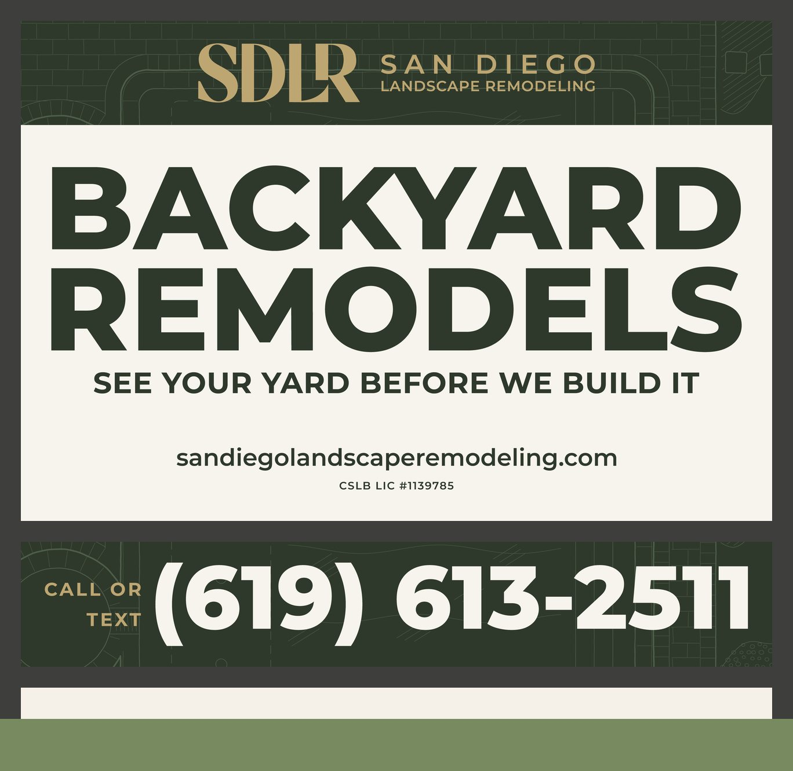
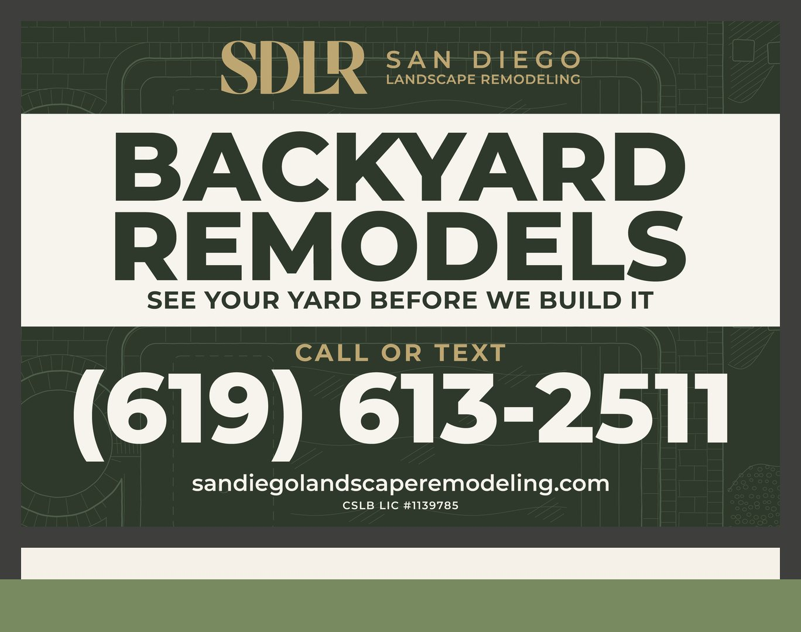
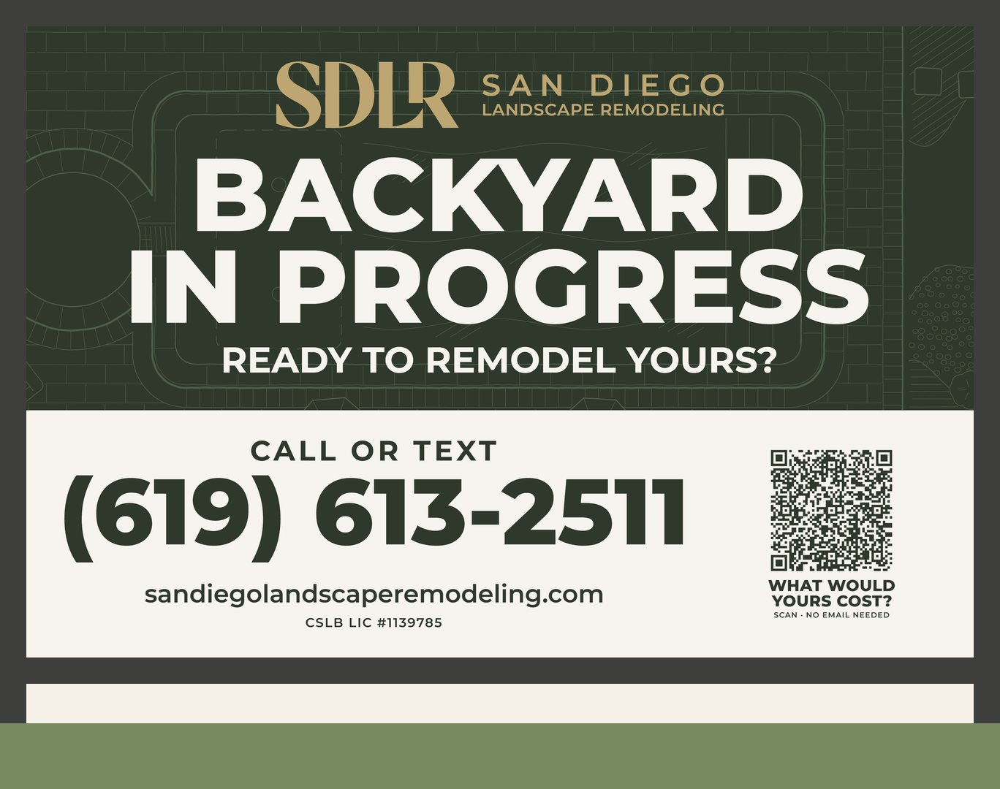
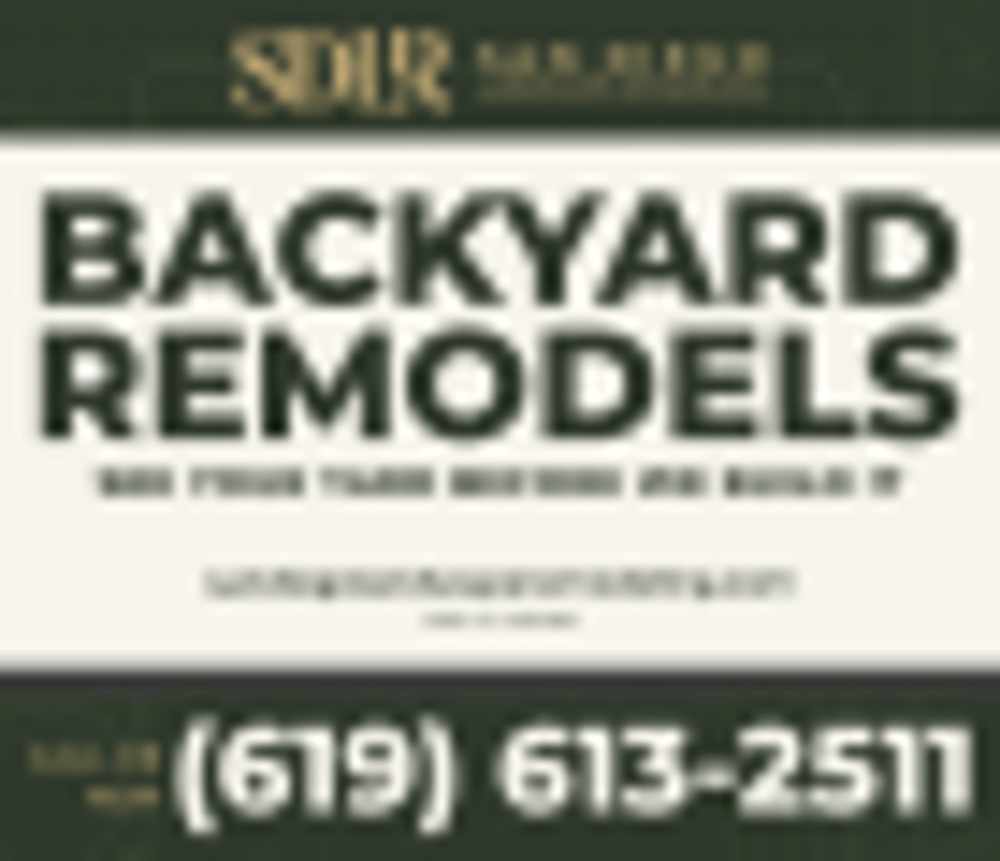
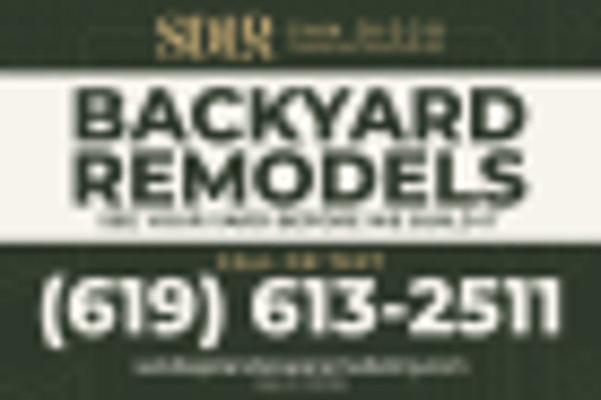
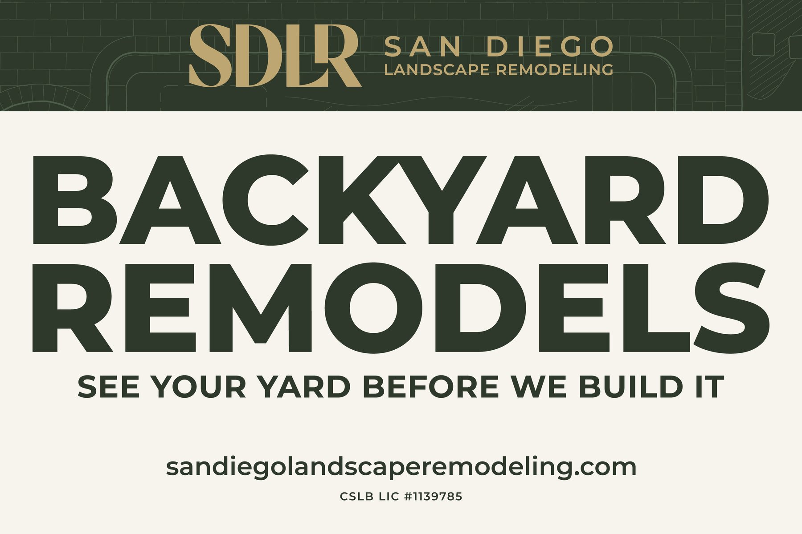
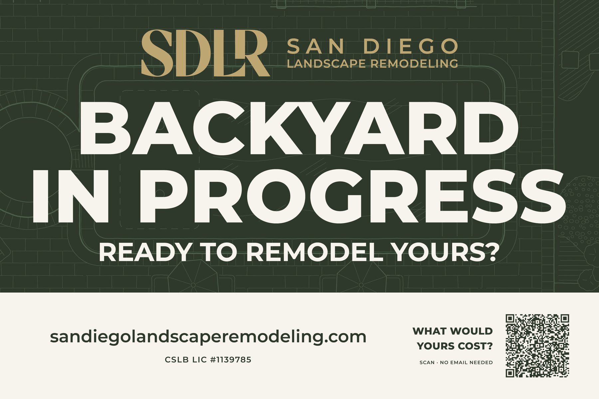
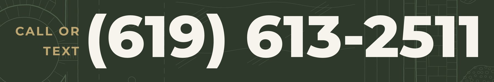
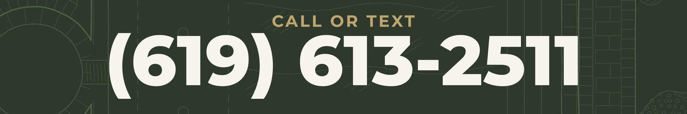

The number moves to the rider
A 36 × 24 in aluminum panel in an angle-iron frame, with one 36 × 6 in rider underneath. The words, colours and type are the approved coroplast sign's. The panel says who we are and what we do; the rider says how to reach us.
Your callRider or one piece? Both are built and print-ready. Not ordered.


Drawn to scale in a 1 in angle-iron frame. The panel's two faces have different art; the rider is the same on both.
My pick: the rider
- The tracking number is coming. You OK'd a separate yard-sign line, just not yet. With the number on the rider, switching means a new rider, not a new aluminum panel.
- The message gets bigger. Without the phone band, BACKYARD REMODELS grows from 3.2 to 3.9 in tall and the logo from 17 to 19 in wide.
- The number is the same size on both sides. On the one-piece, side 2's number shrinks to 2.5 in to make room for the QR. On the rider it's 3.0 in under both faces.
The catch: the one-piece side 1 has a slightly bigger number (3.3 in vs 3.0 in), and you need a frame with a rider slot. The licence stays on the panel, so the sign stays legal if the rider ever goes missing.
The other way: one piece, no rider


The coroplast layout, stretched to 36 × 24. Everything on one sheet of aluminum, no rider slot needed.
From a car, 100 ft away


Each sign shrunk to the detail 20/30 eyes resolve at 100 ft, then blown back up. Headline, logo and number read in both; the rider version's headline is clearly bigger.
Sizes
| With the rider | One piece | |
|---|---|---|
| Headline (capital height) | 3.9 in side 1 · 3.1 in side 2 | 3.2 in side 1 · 2.75 in side 2 |
| Phone number | 3.0 in, on the rider, both sides | 3.3 in side 1 · 2.5 in side 2 |
| Logo | 19 in wide | 17 in wide |
| Change the number later | New rider | New panel |
Flat, as they print




Print spec
| Panel | 36 in wide × 24 in tall, aluminum (.040 is standard; .063 or 3 mm composite is stiffer in wind). Full colour, double-sided with different art: page 1 = side 1, page 2 = side 2, both upright. |
| Rider | 36 in wide × 6 in tall, same material, double-sided with the same art on both faces. |
| Frame | Angle iron for a 36 w × 24 h panel with one 6 × 36 rider slot. Some 24 × 36 frames take a 6 × 24 rider; check before ordering the rider. |
| Files | PDF/X-4, CMYK, type outlined, ⅛ in bleed: panel 36.25 × 24.25 in, rider 36.25 × 6.25 in. Everything sits at least 1 in inside the edge (¾ in top and bottom on the rider), clear of the frame's channels. |
| Colours | Forest #2E382B (C71 M55 Y74 K59, same as the card and the coroplast), gold #BDA572, cream #F5F1E8. Check the proof: Forest shouldn't go black, gold shouldn't go brassy. |
| QR | 3.8 in on side 2: the 60-second cost estimator, tagged utm_content=metal-36x24 so its scans show apart from the coroplast signs'. |
| Licence | CSLB LIC #1139785 on both panel faces, as the law requires on a sign. |
Rough prices
One sign, before shipping and tax, checked November 23, 2026; nothing ordered. Different art per side costs the same as the same art on both.
| Piece | Where | 1 | 3 | 5 |
|---|---|---|---|---|
| Panel 36 × 24, double-sided | BuildASign, .040 aluminum (25% off, no end date shown) + $4.50 frame holes | $122 | $92 ea | $80 ea |
| Signs.com, 3 mm aluminum composite | $121 | $97 ea | $88 ea | |
| Rider 36 × 6, double-sided | Signs.com (BuildASign's riders stop at 30 in wide) | $49 | $39 ea | $36 ea |
| Frame, 36 × 24 + one 36 × 6 rider | Signs Direct, black angle iron | $39 | $39 ea | $36 ea |
| Set-up | One sign | Three | Five |
|---|---|---|---|
| With the rider | about $209 | about $510 | about $758 |
| One piece | about $161 | about $393 | about $581 |
| Change the number later | new rider $49 | vs a new panel about $122 | |
The rider adds about $49 a sign now and saves about $73 each time the number changes. No rider-less 36 × 24 frame is sold at these shops, so the one-piece sign uses the same frame with the slot left empty. Before ordering: the Signs Direct frame bolts aluminum on, so the panel and rider need holes matching its pattern (or use BuildASign's $71 frame with its matched holes); download each printer's template to confirm the bleed; shipping to 91942 shows only in the cart. Local shops (SpeedPro on Arjons Dr, FASTSIGNS Kearny Mesa and Miramar Rd) quote by phone.
Download
The layered Illustrator master (six artboards, live type, global swatches), per-side PDFs, 300 dpi JPGs and the README are in Drive under
02 Clients/san-diego-landscape-remodeling/assets/print-ready/yard-signs/2026-11-23-36x24-metal-rider/print-files-v1/.